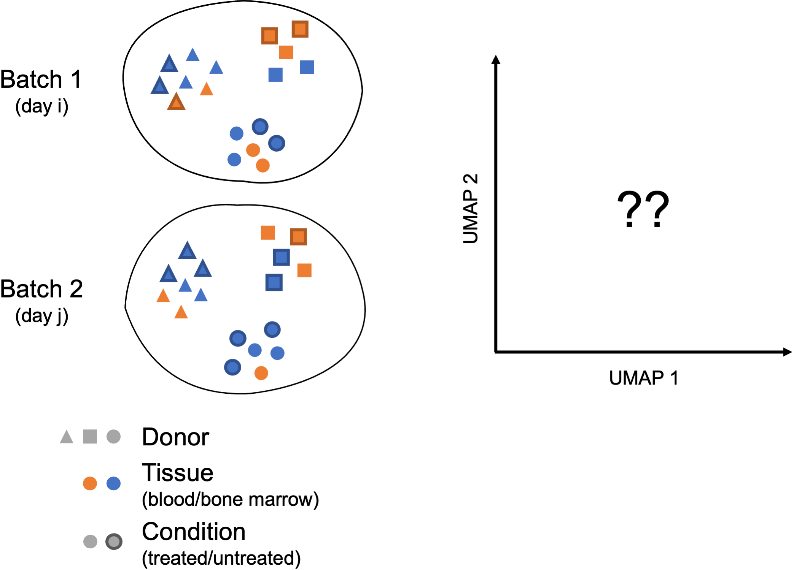

Perform integration of cells across conditions to identify cells that are similar to each other
Describe complex integration tasks and alternative tools for integration
Goals:
To align same cell types across conditions.
Challenges:
Aligning cells of similar cell types so that we do not have clustering downstream due to differences between samples, conditions, modalities, or batches
Recommendations:
Go through the analysis without integration first to determine whether integration is necessary
1 不进行整合时检验细胞分群情况
Generally, we always look at our clustering without integration before deciding whether we need to perform any alignment. Do not just always perform integration because you think there might be differences - explore the data. If we had performed the normalization on both conditions together in a Seurat object and visualized the similarity between cells, we would have seen condition-specific clustering.
An object of class Seurat
28130 features across 29629 samples within 2 assays
Active assay: SCT (14065 features, 3000 variable features)
3 layers present: counts, data, scale.data
1 other assay present: RNA
1 dimensional reduction calculated: pca
# Check which assays are stored in objectssplit_seurat@assays
$RNA
Assay (v5) data with 14065 features for 29629 cells
First 10 features:
AL627309.1, AL669831.5, LINC00115, FAM41C, NOC2L, KLHL17, PLEKHN1,
HES4, ISG15, AGRN
Layers:
counts.ctrl, counts.stim
$SCT
SCTAssay data with 14065 features for 29629 cells, and 2 SCTModel(s)
Top 10 variable features:
FTL, IGKC, CCL2, GNLY, IGLC2, CCL3, CCL4, CXCL10, CCL7, TIMP1
# Run PCAsplit_seurat<-RunPCA(split_seurat)# Run UMAPsplit_seurat<-RunUMAP(split_seurat, dims =1:40, reduction ="pca", reduction.name ="umap.unintegrated")# 分群split_seurat<-FindNeighbors(split_seurat, dims =1:40, reduction ="pca")split_seurat<-FindClusters(split_seurat, cluster.name ="unintegrated_clusters")
Modularity Optimizer version 1.3.0 by Ludo Waltman and Nees Jan van Eck
Number of nodes: 29629
Number of edges: 1104454
Running Louvain algorithm...
Maximum modularity in 10 random starts: 0.8974
Number of communities: 22
Elapsed time: 4 seconds
可以看到，如果不进行整合，不同样本（ctrl vs. stim）间的细胞类型差异很大。The resulting clusters are defined both by cell typeand stimulation condition, which creates challenges for downstream analysis. Condition-specific clustering of the cells indicates that we need to integrate the cells across conditions to ensure that cells of the same cell type cluster together.
Why is it important the cells of the same cell type cluster together?
We want to identify cell types which are present in all samples/conditions/modalities within our dataset, and therefore would like to observe a representation of cells from both samples/conditions/modalities in every cluster. This will enable more interpretable results downstream (i.e. DE analysis, ligand-receptor analysis, differential abundance analysis…).
In this lesson, we will cover the integration of our samples across conditions, which is adapted from Seurat-整合.
Note
在此前的Seurat-基于SCTransform中我们学习了how to run through the workflow from normalization to clustering without integration. Other steps in the workflow remain fairly similar, but the samples would not necessarily be split in the beginning and integration would not be performed.
It can help to first run conditions individually if unsure what clusters to expect or expecting some different cell types between conditions (e.g. tumor and control samples), then run them together to see whether there are condition-specific clusters for cell types present in both conditions. Oftentimes, when clustering cells from multiple conditions there are condition-specific clusters and integration can help ensure the same cell types cluster together.
2整合
If cells cluster by sample, condition, batch, dataset, modality, this integration step can greatly improve the clustering and the downstream analyses.
To integrate, we will use the shared highly variable genes (identified using SCTransform) from each group, then, we will “integrate” or “harmonize” the groups to overlay cells that are similar or have a “common set of biological features” between groups. For example, we could integrate across:
Different conditions (e.g. control and stimulated)
Different datasets (e.g. scRNA-seq from datasets generated using different library preparation methods on the same samples)
Different modalities (e.g. scRNA-seq and scATAC-seq)
Different batches (e.g. when experimental conditions make batch processing of samples necessary)
The goal of integration is to ensure that the cell types of one condition/dataset align with the same celltypes of the other conditions/datasets (e.g. control macrophages align with stimulated macrophages).
2.1 Integration using CCA
Seurat v5 enables streamlined integrative analysis using the IntegrateLayers function. The method currently supports five integration methods. Each of these methods performs integration in low-dimensional space, and returns a dimensional reduction (i.e. integrated.rpca) that aims to co-embed shared cell types across batches:
The anchor-based CCA integration (method=CCAIntegration) utilizes the canonical correlation analysis (CCA). This method expects “correspondences” or shared biological states among at least a subset of single cells across the groups. The steps in the Seurat integration workflow are outlined in the figure below:
CCA identifies shared sources of variation between the conditions/groups. It is a form of PCA, in that it identifies the greatest sources of variation in the data, but only if it is shared or conserved across the conditions/groups (using the 3000 most variant genes from each sample).
This step roughly aligns the cells using the greatest shared sources of variation.
Note
The shared highly variable genes are used because they are the most likely to represent those genes distinguishing the different cell types present.
Identify anchors or mutual nearest neighbors (MNNs) across datasets (sometimes incorrect anchors are identified):
MNNs can be thought of as ‘best buddies’. For each cell in one condition:
The cell’s closest neighbor in the other condition is identified based on gene expression values - its ‘best buddy’.
The reciprocal analysis is performed, and if the two cells are ‘best buddies’ in both directions, then those cells will be marked as anchors to ‘anchor’ the two datasets together.
“The difference in expression values between cells in an MNN pair provides an estimate of the batch effect, which is made more precise by averaging across many such pairs. A correction vector is obtained and applied to the expression values to perform batch correction.” (Stuart et al. 2019)
Filter anchors to remove incorrect anchors:
Assess the similarity between anchor pairs by the overlap in their local neighborhoods (incorrect anchors will have low scores) - do the adjacent cells have ‘best buddies’ that are adjacent to each other?
Integrate the conditions/datasets:
Use anchors and corresponding scores to transform the cell expression values, allowing for the integration of the conditions/datasets (different samples, conditions, datasets, modalities)
Note
Transformation of each cell uses a weighted average of the two cells of each anchor across anchors of the datasets. Weights determined by cell similarity score (distance between cell and k nearest anchors) and anchor scores, so cells in the same neighborhood should have similar correction values.
If cell types are present in one dataset, but not the other, then the cells will still appear as a separate sample-specific cluster.
Now, using our SCTransform object as input, let’s perform the integration across conditions.
After integration, to visualize the integrated data we can use dimensionality reduction techniques, such as PCA and Uniform Manifold Approximation and Projection (UMAP). While PCA will determine all PCs, we can only plot two at a time. In contrast, UMAP will take the information from any number of top PCs to arrange the cells in this multidimensional space. It will take those distances in multidimensional space and plot them in two dimensions working to preserve local and global structure. In this way, the distances between cells represent similarity in expression. If you wish to explore UMAP in more detail, this post is a nice introduction to UMAP theory.
Here, we visualize with UMAP. UMAP is a stochastic algorithm – this means that it makes use of randomness both to speed up approximation steps, and to aid in solving hard optimization problems. Due to the stochastic nature, different runs of UMAP can produce different results. We can set the seed to a specific (but random) number, and this avoids the creation of a slightly different UMAP each time re-run our code.
# Set seedset.seed(123456)# Run UMAPseurat_integrated<-RunUMAP(seurat_integrated, dims =1:40, reduction ="integrated.cca", # 更改降维来源为整合后的"integrated.cca" reduction.name ="umap.integrated")# 分群seurat_integrated<-FindNeighbors(seurat_integrated, dims =1:40, reduction ="integrated.cca")#更改降维来源为"integrated.cca"seurat_integrated<-FindClusters(seurat_integrated, cluster.name ="integrated_clusters")
Modularity Optimizer version 1.3.0 by Ludo Waltman and Nees Jan van Eck
Number of nodes: 29629
Number of edges: 1128935
Running Louvain algorithm...
Maximum modularity in 10 random starts: 0.8864
Number of communities: 22
Elapsed time: 4 seconds
When we compare the similarity between the ctrl and stim clusters in the above plot with what we see using the the unintegrated dataset, it is clear that this dataset benefitted from the integration!
3.1 Save the “integrated” object!
# Save integrated seurat objectsaveRDS(seurat_integrated, "output/scRNA-seq_online/integrated_seurat.rds")
4 Complex Integration Tasks
In the section above, we’ve presented the Seurat integration workflow, which uses canonical correlation analysis (CCA) and multiple nearest neighbors (MNN) to find “anchors” and integrate across samples, conditions, modalities, etc. While the Seurat integration approach is widely used and several benchmarking studies support its great performance in many cases, it is important to recognize that alternative integration algorithms exist and may work better for more complex integration tasks (see (Luecken et al. 2021) for a comprehensive review).
Not all integration algorithms rely on the same methodology, and they do not always provide the same type of corrected output (embeddings, count matrix…). Their performance is also affected by preliminary data processing steps, including which normalization method was used and how highly variable genes (HVGs) were determined. All those considerations are important to keep in mind when selecting a data integration approach for your study.
What do we mean by a “complex” integration task?
In their benchmarking study (Luecken et al. 2021) compared the performance of different scRNA-seq integration tools when confronted to different “complex” tasks. The “complexity” of integrating a dataset may relate to the number of samples (perhaps generated using different protocols) but also to the biological question the study seeks to address (e.g. comparing cell types across tissues, species…). In these contexts, you may need to integrate across multiple confounding factors before you can start exploring the biology of your system.

In these more complex scenarios, you want to select a data integration approach that successfully balances out the following challenges:
Correcting for inter-sample variability due to source samples from different donors
Correcting for variability across protocols/technologies (10X, SMART-Seq2, inDrop…; single-cell vs. single nucleus; variable number of input cells and sequencing depth; different sample preparation steps…)
Identifying consistent cell types across different tissues (peripheral blood, bone marrow, lung…) and/or different locations (e.g. areas of the brain)
Keeping apart cell subtypes (or even cell states) that show similar transcriptomes (CD4 naive vs. memory, NK vs NKT)
Keeping apart cell subtypes that are unique to a tissue/condition
Conserving the developmental trajectory, if applicable
Not all tools may perform as well on every task, and complex datasets may require testing several data integration approaches. You might want to analyze independently each of the batches you consider to integrate across, in order to define cell identities at this level before integrating and checking that the initially annotated cell types are mixed as expected.
4.1 Harmonizing as a method of integration
Harmony (Korsunsky et al. 2019) was devleoped in 2019, and is an example of a tool that can work with complex integration tasks. It is available as an GitHub and CRAN, and it has functions for standalone and Seurat pipeline analyses. It has been shown to perform incredibly well from recent benchmarking studies (Tran et al. 2020).
在Seurat工作流的基础上实现基于Harmony的单细胞数据整合，可以使用Harmony包（available on GitHub and CRAN），详见该教程。同时，Seurat V5中的IntegrateLayers函数集成了Harmony整合算法，可以直接调用，详见：Seurat v5单细胞数据整合分析。Compared to other algorithms, Harmony notably presents the following advantages (Korsunsky et al. 2019)(Tran et al. 2020):
Possibility to integrate data across several variables (for example, by experimental batch and by condition)
Significant gain in speed and lower memory requirements for integration of large datasets
Korsunsky, Ilya, Nghia Millard, Jean Fan, Kamil Slowikowski, Fan Zhang, Kevin Wei, Yuriy Baglaenko, Michael Brenner, Po-ru Loh, and Soumya Raychaudhuri. 2019. “Fast, Sensitive and Accurate Integration of Single-Cell Data with Harmony.”Nature Methods 16 (12): 1289–96. https://doi.org/10.1038/s41592-019-0619-0.
Luecken, Malte D., M. Büttner, K. Chaichoompu, A. Danese, M. Interlandi, M. F. Mueller, D. C. Strobl, et al. 2021. “Benchmarking Atlas-Level Data Integration in Single-Cell Genomics.”Nature Methods 19 (1): 41–50. https://doi.org/10.1038/s41592-021-01336-8.
Stuart, Tim, Andrew Butler, Paul Hoffman, Christoph Hafemeister, Efthymia Papalexi, William M. Mauck, Yuhan Hao, Marlon Stoeckius, Peter Smibert, and Rahul Satija. 2019. “Comprehensive Integration of Single-Cell Data.”Cell 177 (7): 1888–1902.e21. https://doi.org/10.1016/j.cell.2019.05.031.
Tran, Hoa Thi Nhu, Kok Siong Ang, Marion Chevrier, Xiaomeng Zhang, Nicole Yee Shin Lee, Michelle Goh, and Jinmiao Chen. 2020. “A Benchmark of Batch-Effect Correction Methods for Single-Cell RNA Sequencing Data.”Genome Biology 21 (1). https://doi.org/10.1186/s13059-019-1850-9.
Source Code
---title: "单细胞数据整合（Integration）"---::: callout-note###### Learning Objectives:- Perform integration of cells across conditions to identify cells that are similar to each other- Describe complex integration tasks and alternative tools for integration:::{width="545"}------------------------------------------------------------------------**Goals:**- To **align same cell types** across conditions.**Challenges:**- **Aligning cells of similar cell types** so that we do not have clustering downstream due to differences between samples, conditions, modalities, or batches**Recommendations:**- Go through the analysis without integration first to determine whether integration is necessary------------------------------------------------------------------------# 不进行整合时检验细胞分群情况Generally, we always look at our clustering **without integration** before deciding whether we need to perform any alignment. **Do not just always perform integration because you think there might be differences - explore the data.** If we had performed the normalization on both conditions together in a Seurat object and visualized the similarity between cells, we would have seen condition-specific clustering.## 数据导入We use the `split_seurat` object from the [previous lesson](/single_cell/scRNA-seq_online/06_SC_SCT_normalization.qmd).```{r}library(Seurat)split_seurat <-readRDS("output/scRNA-seq_online/split_seurat.rds")split_seurat# Check which assays are stored in objectssplit_seurat@assays# 查看目前默认的assayDefaultAssay(split_seurat)# 查看默认assay的layersLayers(split_seurat)# 查看每种样本包含多少细胞table(split_seurat$sample)# 查看降维信息names(split_seurat@reductions)```## 降维、分群```{r}#| fig-cap: 整合前的细胞分群情况#| label: fig-整合前的细胞分群情况#| fig-width: 20# Run PCAsplit_seurat <-RunPCA(split_seurat)# Run UMAPsplit_seurat <-RunUMAP(split_seurat, dims =1:40, reduction ="pca", reduction.name ="umap.unintegrated")# 分群split_seurat <-FindNeighbors(split_seurat, dims =1:40, reduction ="pca")split_seurat <-FindClusters(split_seurat, cluster.name ="unintegrated_clusters")# Plot UMAPp1 <-DimPlot(split_seurat, reduction ="umap.unintegrated", group.by ="sample")p2 <-DimPlot(split_seurat, reduction ="umap.unintegrated", split.by ="sample")library(cowplot)plot_grid(p1, p2, ncol =2, labels ="AUTO")```可以看到，如果不进行整合，不同样本（ctrl vs. stim）间的细胞类型差异很大。The resulting clusters are defined **both by cell type** **and stimulation condition**, which creates challenges for downstream analysis. Condition-specific clustering of the cells indicates that we need to integrate the cells across conditions to ensure that cells of the same cell type cluster together.::: callout-tip关于`FindNeighbors()`和`FindClusters()`的详细说明见[下一节](/single_cell/scRNA-seq_online/07_SC_clustering_cells_SCT.qmd)。:::::: callout-note###### **Why is it important the cells of the same cell type cluster together?**We want to identify **cell types which are present in all samples/conditions/modalities** within our dataset, and therefore would like to observe a representation of cells from both samples/conditions/modalities in every cluster. This will enable more interpretable results downstream (i.e. DE analysis, ligand-receptor analysis, differential abundance analysis...).:::In this lesson, we will cover the integration of our samples across conditions, which is adapted from [Seurat-整合](/single_cell/seurat/integration.qmd).::: callout-note在此前的[Seurat-基于SCTransform](/single_cell/seurat/sctransform.qmd)中我们学习了how to run through the workflow from normalization to clustering without integration. Other steps in the workflow remain fairly similar, but the **samples would not necessarily be split** in the beginning and integration would not be performed.It can help to first run conditions individually if unsure what clusters to expect or expecting some different cell types between conditions (e.g. tumor and control samples), then run them together to see whether there are condition-specific clusters for cell types present in both conditions. Oftentimes, when clustering cells from multiple conditions there are condition-specific clusters and integration can help ensure the same cell types cluster together.:::# **整合****If cells cluster by sample, condition, batch, dataset, modality, this integration step can greatly improve the clustering and the downstream analyses**.To integrate, we will use the shared highly variable genes (identified using `SCTransform`) from each group, then, we will "integrate" or "harmonize" the groups to overlay cells that are similar or have a "common set of biological features" between groups. For example, we could integrate across:- Different **conditions** (e.g. control and stimulated)- Different **datasets** (e.g. scRNA-seq from datasets generated using different library preparation methods on the same samples)- Different **modalities** (e.g. scRNA-seq and scATAC-seq)- Different **batches** (e.g. when experimental conditions make batch processing of samples necessary)The goal of integration is to ensure that the cell types of one condition/dataset align with the same celltypes of the other conditions/datasets (e.g. control macrophages align with stimulated macrophages).## Integration using CCASeurat v5 enables streamlined integrative analysis using the `IntegrateLayers` function. The method currently supports **five integration methods**. Each of these methods performs integration in low-dimensional space, and **returns a dimensional reduction** (i.e. `integrated.rpca`) that aims to co-embed shared cell types across batches:The **anchor-based CCA integration** (`method=CCAIntegration`) utilizes the canonical correlation analysis (CCA). This method expects "correspondences" or **shared biological states** among at least a subset of single cells across the groups. The steps in the `Seurat` integration workflow are outlined in the figure below:> Image credit: [@stuart2019]The different steps applied are as follows:1. Perform **canonical correlation analysis (CCA):** CCA identifies shared sources of variation between the conditions/groups. It is a form of PCA, in that it **identifies the greatest sources of variation** in the data, but only if it is **shared or conserved** across the conditions/groups (using the 3000 most variant genes from each sample). This step roughly aligns the cells using the greatest shared sources of variation. ::: callout-note The shared highly variable genes are used because they are the most likely to represent those genes distinguishing the different cell types present. :::2. **Identify anchors** or mutual nearest neighbors (MNNs) across datasets (sometimes incorrect anchors are identified): MNNs can be thought of as 'best buddies'. For each cell in one condition: - The cell's closest neighbor in the other condition is identified based on gene expression values - its 'best buddy'. - The reciprocal analysis is performed, and if the two cells are 'best buddies' in both directions, then those cells will be marked as **anchors** to 'anchor' the two datasets together.> "The difference in expression values between cells in an MNN pair provides an estimate of the batch effect, which is made more precise by averaging across many such pairs. A correction vector is obtained and applied to the expression values to perform batch correction." [@stuart2019]3. **Filter anchors** to remove incorrect anchors: Assess the similarity between anchor pairs by the overlap in their local neighborhoods (incorrect anchors will have low scores) - do the adjacent cells have 'best buddies' that are adjacent to each other?4. **Integrate** the conditions/datasets: Use anchors and corresponding scores to transform the cell expression values, allowing for the integration of the conditions/datasets (different samples, conditions, datasets, modalities) ::: callout-note Transformation of each cell uses a weighted average of the two cells of each anchor across anchors of the datasets. Weights determined by cell similarity score (distance between cell and k nearest anchors) and anchor scores, so cells in the same neighborhood should have similar correction values. ::: **If cell types are present in one dataset, but not the other, then the cells will still appear as a separate sample-specific cluster.**Now, using our `SCTransform` object as input, let's perform the integration across conditions.```{r}# 可以看到目前的降维信息包括"pca"和"umap.unintegrated"names(split_seurat@reductions)# 整合，比较耗时间（约13min），进度条会一直显示0%直至运算完成library(beepr)seurat_integrated <-IntegrateLayers(object = split_seurat,method = CCAIntegration,normalization.method ="SCT", # 指定使用的标准化方法为SCTransformorig.reduction ="pca",new.reduction ="integrated.cca", # 整合后新的降维数据的名称verbose =FALSE); beep()# 整合后重新合并RNA layerseurat_integrated[["RNA"]] <-JoinLayers(seurat_integrated[["RNA"]])# 查看整合后的降维信息names(seurat_integrated@reductions)```::: callout-tip如何调用Seurat嵌入的其他整合算法进行整合，参考：[Seurat v5单细胞数据整合分析](/single_cell/seurat/integrative_analysis_in_seurat_v5.qmd)。:::# 整合后检验细胞分群情况After integration, to visualize the integrated data we can use dimensionality reduction techniques, such as PCA and Uniform Manifold Approximation and Projection (UMAP). While PCA will determine all PCs, we can only plot two at a time. In contrast, UMAP will take the information from any number of top PCs to arrange the cells in this multidimensional space. It will take those distances in multidimensional space and plot them in two dimensions working to preserve local and global structure. In this way, the distances between cells represent similarity in expression. If you wish to explore UMAP in more detail, [this post](https://pair-code.github.io/understanding-umap/) is a nice introduction to UMAP theory.Here, we **visualize with UMAP**. UMAP is a stochastic algorithm -- this means that it makes use of randomness both to speed up approximation steps, and to aid in solving hard optimization problems. Due to the stochastic nature, different runs of UMAP can produce different results. We can **set the seed** to a specific (but random) number, and this avoids the creation of a slightly different UMAP each time re-run our code.```{r}#| fig-cap: "整合前后细胞分群情况（A, B: 整合前；C, D: 整合后）"#| label: fig-整合前后细胞分群情况#| fig-width: 20#| fig-height: 15# Set seedset.seed(123456)# Run UMAPseurat_integrated <-RunUMAP(seurat_integrated, dims =1:40,reduction ="integrated.cca", # 更改降维来源为整合后的"integrated.cca"reduction.name ="umap.integrated") # 分群seurat_integrated <-FindNeighbors(seurat_integrated, dims =1:40, reduction ="integrated.cca") #更改降维来源为"integrated.cca"seurat_integrated <-FindClusters(seurat_integrated, cluster.name ="integrated_clusters")# Plot UMAP p3 <-DimPlot(seurat_integrated, reduction ="umap.integrated", group.by ="sample")p4 <-DimPlot(seurat_integrated, reduction ="umap.integrated", split.by ="sample")plot_grid(p1, p2, p3, p4, ncol =2, labels ="AUTO")```> When we compare the similarity between the ctrl and stim clusters in the above plot with what we see using the the unintegrated dataset, **it is clear that this dataset benefitted from the integration!**## Save the "integrated" object!```{r}# Save integrated seurat objectsaveRDS(seurat_integrated, "output/scRNA-seq_online/integrated_seurat.rds")```# Complex Integration TasksIn the section above, we've presented the `Seurat` integration workflow, which uses canonical correlation analysis (CCA) and multiple nearest neighbors (MNN) to find "anchors" and integrate across samples, conditions, modalities, etc. While the `Seurat` integration approach is widely used and several benchmarking studies support its great performance in many cases, it is important to recognize that **alternative integration algorithms exist and may work better for more complex integration tasks** (see [@luecken2021] for a comprehensive review).Not all integration algorithms rely on the same methodology, and they do not always provide the same type of corrected output (embeddings, count matrix...). Their performance is also affected by preliminary data processing steps, including which normalization method was used and how highly variable genes (HVGs) were determined. All those considerations are important to keep in mind when selecting a data integration approach for your study.**What do we mean by a "complex" integration task?**In their benchmarking study [@luecken2021] compared the performance of different scRNA-seq integration tools when confronted to different "complex" tasks. The "complexity" of integrating a dataset may relate to the number of samples (perhaps generated using different protocols) but also to the biological question the study seeks to address (e.g. comparing cell types across tissues, species...). In these contexts, you may **need to integrate across multiple confounding factors before you can start exploring the biology of your system.**{width="597"}In these more complex scenarios, you want to select a data integration approach that successfully balances out the following challenges:- Correcting for **inter-sample variability** due to source samples from different donors- Correcting for variability across **protocols/technologies** (10X, SMART-Seq2, inDrop...; single-cell vs. single nucleus; variable number of input cells and sequencing depth; different sample preparation steps...)- Identifying consistent cell types across **different tissues** (peripheral blood, bone marrow, lung...) and/or different locations (e.g. areas of the brain)- Keeping apart cell subtypes (or even cell states) that show similar transcriptomes (CD4 naive vs. memory, NK vs NKT)- Keeping apart cell subtypes that are unique to a tissue/condition- Conserving the developmental trajectory, if applicableNot all tools may perform as well on every task, and complex datasets may require testing several data integration approaches. You might want to analyze independently each of the batches you consider to integrate across, in order to define cell identities at this level before integrating and checking that the initially annotated cell types are mixed as expected.## Harmonizing as a method of integrationHarmony [@korsunsky2019] was devleoped in 2019, and is an example of **a tool that can work with complex integration tasks**. It is available as an [GitHub](#0) and [CRAN](#0), and it has functions for standalone and Seurat pipeline analyses. It has been shown to perform incredibly well from recent benchmarking studies [@tran2020].在Seurat工作流的基础上实现基于Harmony的单细胞数据整合，可以使用`Harmony`包（available on [GitHub](https://github.com/immunogenomics/harmony) and [CRAN](https://cran.r-project.org/web/packages/harmony/index.html)），详见[该教程](https://hbctraining.github.io/scRNA-seq_online/lessons/06a_integration_harmony.html)。同时，Seurat V5中的`IntegrateLayers`函数集成了Harmony整合算法，可以直接调用，详见：[Seurat v5单细胞数据整合分析](/single_cell/seurat/integrative_analysis_in_seurat_v5.qmd#sec-sc_integration)。Compared to other algorithms, `Harmony` notably presents the following advantages [@korsunsky2019] [@tran2020]:1. Possibility to integrate data across several variables (for example, by experimental batch and by condition)2. Significant gain in speed and lower memory requirements for integration of large datasets3. Interoperability with the `Seurat` workflow------------------------------------------------------------------------::: {.callout-note collapse="true" icon="false"}## Session Info```{r}#| echo: falsesessionInfo()```:::# References {.unnumbered}::: {#refs}:::